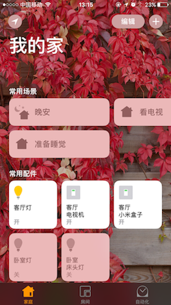
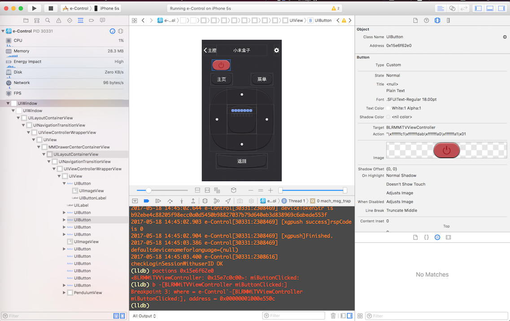

前言
想象一下，吃过晚饭，坐在沙发上，“嘿Siri，电视时间”，客厅灯关了，电视和电视盒子开了。过了很久，你困了，起身，“嘿Siri，准备睡觉”，卧室床头灯开了，电视和电视盒子关了，最后，你躺在床上，“嘿Siri，晚安”，随之你的家也开始休息。

当然，你也可以想象一下这样的场景。
硬件
树莓派3B (¥256)
易微联Wi-Fi智能插座(sonoff s22) (¥29.9)
sonoff Wi-Fi智能开关改装件 (¥29.9)
BroadLink RM Pro (¥179)
软件
HomeAssistant
HomeAssistant是运行在Python 3上的开源智能家居平台，能够跟踪和控制家中的智能设备，实现自动化控制。
安装教程
HomeBridge
Homebridge是一种轻量级的NodeJS服务器, 模拟iOS HomeKit API, 让普通的 Wifi 设备也能接入 HomeKit 从而通过Siri控制。
安装教程
homebridge-homeassistant
安装：npm install -g homebridge-homeassistant
homebridge-broadlink-rm
安装：npm install -g homebridge-broadlink-rm
接入
Sonoff设备
首先，按照官方教程，对sonoff设备进行设置。设置完成后，我们已经可以在易微联app中进行控制了。当然。我们要做的是在HomeAssistant中进行控制。目前网上所能找到的方法是对Sonoff开关进行改造，刷固件，Sonoff开关改造及刷机模式进入，Sonoff-HomeAssistant，本来我当时也是打算照着视频教程做，无奈，淘宝买的电烙铁还在快递的路上，只好对易微联App逆一逆，以表敬意。
我使用了 XcodeAppPluginTemplate 创建工程，编译执行，可以看到，它实际上是套了app外壳的webview。
控制台打印了不少有用信息，分析log可以得出大致的控制流程。
|
|
由此，我用python写了sonoff-server，模拟app对易微联后台发送控制指令，接受相应的状态改变信息，并且封装成Restful接口给HomeAssistant调用。具体参数信息，可以通过抓包分析或者逆向得到。
执行命令python sonoff-server.py，修改.homeassistant/configuration.yaml, 加入如下文本。其中127.0.0.1:5000为sonoff-server服务ip地址，10000xxxxx 10000yyyyy为sonoff设备编号。
|
然后，重启HomeAssistant sudo systemctl restart home-assistant@homeassistant.service，重启HomeBridge sudo /etc/init.d/homebridge restart，不出问题的话，就可以在iPhone中家庭app看到新增的设备了。
BroadLink Rm Pro
对于普通的红外遥控设备，可以在家庭app中触发Learn开关，按下遥控键，就可以在homebridge的log中看到对应的指令码。但是奇怪的是BroadLink RM收不到小米遥控器的指令信息，然而易控app又确实可以控制小米盒子，所以，只好再逆一逆了。

在-[BLRMMiTVViewController miButtonClicked:]打断点，按下开关键，断点触发，然后在调用objc_msgSend处打断点，通过po (char *)$x1查看调用的方法，最后，摸索出
|
这一调用链，直觉告诉我-[BLFMDBSqlite getCodesByButtonID:]返回的结果就是我所需要的
|
已经得到了想要的指令了。
接下来，在 .homebridge/config.json 中添加
|
总结
本文记录的主要是接入硬件中遇到的问题，其他还有许多由于篇幅问题未做记录，但大部分都可以在官网给出的文档中查到。WWDC2017快了，HomeKit 和 SiriKit 会有什么更新，拭目以待。